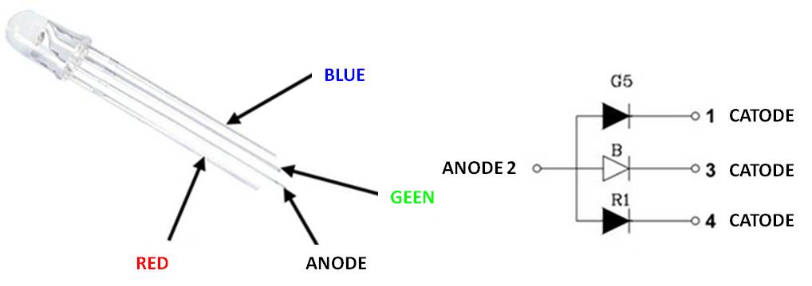

About Week 11
Output Devices Exercise...

For this week the assignment is about output devices in order add them to a microcontroller board and program them to do something.
In this assignment I took the opportunity to continue to think about my final project and in particular the two main output devices that compose each single pi of the table: RGB Leds and Servos
For the microcontroller board as just said in my previous assignment I continued to use the satshakit of Daniele.
RGB LED
The RGB LEDs are LEDs capable of producing 3 different wavelengths : Red ( R , red ), Green ( G , green ) Blue ( B , blue )
An RGB Led has four terminals and it can have two configurations :
- 1)1 anode and cathode 3 ( RGB common anode )
- 2)Three anodes and one cathode ( RGB common cathode )

From LED datasheet the voltage drop Vf , for the same nominal current If is different for each LED and the variability of Vf is quite wide, for this reason to perform the calculations of the resistances by placing in series to the respective LED it is possible to considered an average value of Vf.
The operating voltage of the diodes to consider may be accessed at column TYP and these values take into consideration a direct current of 20 mA , using these voltage values it is possible to calculate the value of the resistance to put in series for each RGB Pin. For simplicity I used an unique value (22O Ohm) for each pin
SERVO
Servo motor has integrated gears and a shaft that can be precisely controlled. Standard servos allow the shaft to be positioned at various angles, usually between 0 and 180 degrees. Continuous rotation servos allow the rotation of the shaft to be set to various speeds. Servo motors have three wires: power, ground, and signal.
For my exercise I used a standard servo (0-180 degree). My goal was to put altogether and build a prototype of table pin composed of a led a servo and a concept structure of pin system. I used an input device used in my previous exercise ( potenziometer) in order to drive the servo with a satshakit and another satshakit to drive Led.

After this I uploaded the following sketches in order to drive the servo accordingly to the AnalogIn value provided by the measure of the potenziometer, while for the RGB Led alternative Green Red and Blue are switched on
Sketch_output_servo_with_Potenziometer
#includeServo myservo; // create servo object to control a servo int potpin = 0; // analog pin used to connect the potentiometer int val; // variable to read the value from the analog pin void setup() { myservo.attach(9); // attaches the servo on pin 9 to the servo object } void loop() { val = analogRead(potpin); // reads the value of the potentiometer (value between 0 and 1023) val = map(val, 0, 1023, 0, 180); // scale it to use it with the servo (value between 0 and 180) myservo.write(val); // sets the servo position according to the scaled value delay(15); // waits for the servo to get there }
Sketch_Output_RGBLed
// pin for LED RGB
const int GREEN = 10;
const int BLUE = 9;
const int RED = 11;
// transition time
const int delayTime = 20;
void setup() {
// imposta il pin digitale come output
pinMode(GREEN, OUTPUT);
pinMode(BLUE, OUTPUT);
pinMode(RED, OUTPUT);
// set HIGH GREEN, BLUE, RED
digitalWrite(GREEN, HIGH);
digitalWrite(BLUE, HIGH);
digitalWrite(RED, HIGH);
}
int ValGreen;
int ValRed;
int ValBlue;
void loop() {
// start with Green
ValGreen = 255;
for( int i = 0 ; i < 255 ; i += 1 ){
ValGreen -= 1;
analogWrite( GREE, 255 - ValGreen );
delay( delayTime );
}
// continue with RED
ValRed = 255;
for( int i = 0 ; i < 255 ; i += 1 ){
ValRed -= 1;
analogWrite( RED, 255 - ValRed );
delay( delayTime );
}
// and finally blue
ValBlue = 255;
for( int i = 0 ; i < 255 ; i += 1 ){
ValBlue -= 1;
analogWrite( BLUE, 255 - ValBlue );
delay( delayTime );
}
}


Obviously with a single board is not possible drive several servo/RgB Led. A solution is the use of a shift register like the Texas Instruments TLC5940.
The TLC5940 is a 16 channel PWM unit with 12 bit duty cycle control (0 - 4095), 6 bit current limit control (0 - 63), and a daisy chainable serial interface. It is handy for expanding the number of PWM outputs available.
I started to study this interesting chip form my final project in order to command a lot of leds and servos, and I started from this tutorial: http://playground.arduino.cc/learning/TLC5940


I started to study this interesting chip form my final project in order to command a lot of leds and servos, and I started from this tutorial: http://playground.arduino.cc/learning/TLC5940
An Arduino Library for the TLC5940 is available: https://code.google.com/p/tlc5940arduino/
After this preliminary study I decided to build a 64 channel shift register by chaining 4 TLC5490 shift registries.
For a 16 Channel circuit I need:
- 1)A satshakit board
- 2)a 2,2 kΩ resistor
- 3)a 0.1uF ceramic and a 4.7uF electrolytic capacitor
- 4)16 3.3 kΩ resistors
- 5)A 10kΩ pull up resistor

In order to daisy chain two or more TLC5940, connect the SOUT of TLC 1 to the SIN of TLC 2, and the SCLK, XLAT, BLANK and GSCLK and proceed in that manner for every additional TLC5940.
An important thing to do in order to use multiple TLC5940s, is to set the number of registries in the file ”tlc_config.h“ in the library's folder by replacing the value of the constant NUM_TLCS with the amount of TLCs (in my case 4). After saving it is necessary to restart the Arduino IDE.
Sketch_TLC_SERVO
//Requires the Tlc5940 library. http://code.google.com/p/tlc5940arduino/downloads/list
#include "Tlc5940.h"
#include "tlc_servos.h"
void setup()
{
tlc_initServos(); // Note: this will drop the PWM freqency down to 50Hz.
}
void loop()
{
for (int angle = 0; angle < 90; angle++) {
tlc_setServo(0, angle);
tlc_setServo(1, angle);
Tlc.update();
delay(5);
}
for (int angle = 90; angle >= 0; angle--) {
tlc_setServo(0, angle);
tlc_setServo(1, angle);
Tlc.update();
delay(5);
}
}